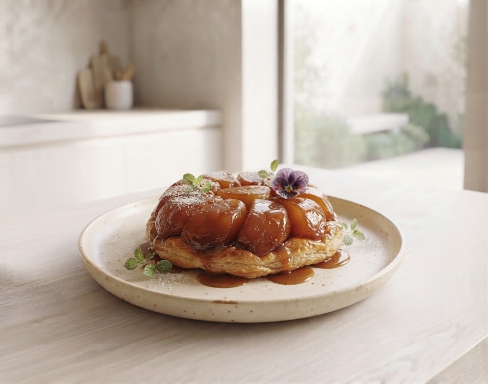
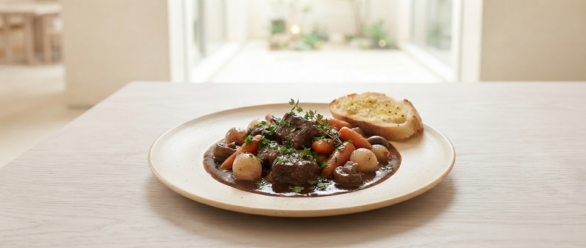
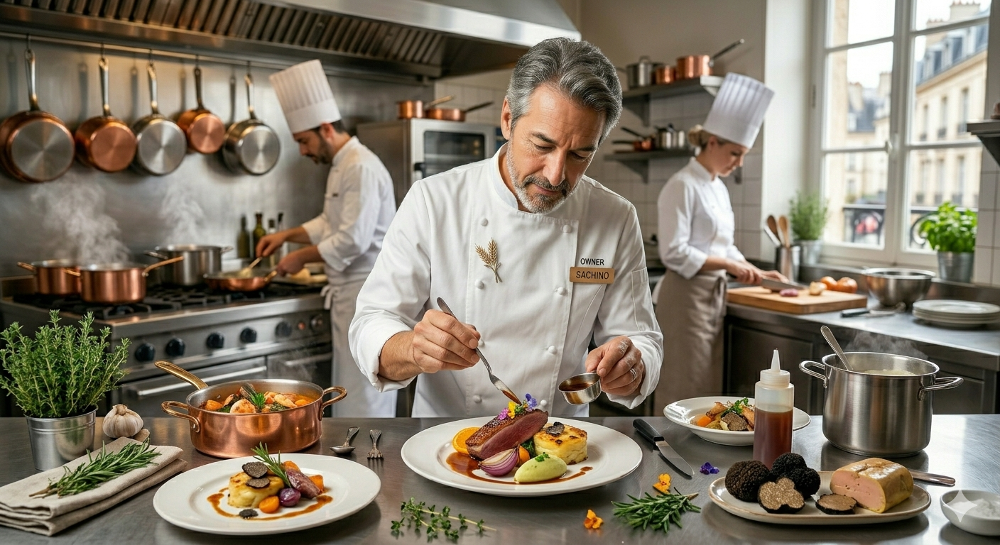

「高級フレンチはマナーや服装が気になって、会話に集中できない…」
「せっかくの記念日。チェーン店じゃなく、特別な隠れ家で祝いたい。」
「お酒が好きだから、料理だけでなくワインもしっかり楽しみたい。」
ビストロ・オジェなら、ジーンズのままでも構いません。
パリで研鑽を積んだシェフが、あなたの目の前で
最高の一皿を仕上げます。

Signature
牛肉の赤ワイン煮込み
素材の味を極限まで引き出す伝統的な調理法。一口食べれば、その「違い」が分かります。
シェフ自ら厳選した、料理を際立たせる銘柄たち。完璧な調和を提案します。
山形駅前の喧騒を離れ、静かに料理と向き合える15席限定の隠れ家です。

Owner Chef
2009年、山形にて創業
かつてフランス・パリの街角で出会った、気取らないのに震えるほど美味しい一皿。その感動を日本でも伝えたいという一心で、私は料理を続けてきました。
「ビストロ」は本来、日常の中で最高のご馳走を楽しむ場所。私は、マナーよりも「味わう喜び」を最優先に考えます。
イケオジと言われることもありますが、中身はただの「料理バカ」です。フランス仕込みの技術を、ぜひ気取らずに楽しんでください。
このページをご覧のあなただけに、最初の「幸せ」を贈ります。
じっくり飴色に焼いたリンゴの濃密な甘み。食後の幸せをプレゼントいたします。
お席に着いたらまず一息。最適な一杯をお出しします。
「牛肉の赤ワイン煮込みは文字通りほろっほろ！身に染み渡るコク深さで、その日一日生きていてよかったなと思いました。」
「マナーやドレスコードを考えずに美味しい料理を楽しむ。落ち着いたフレンチのお店。駅前にあるだけで最高！」
「お通しの生ハムバターにはやられました…。お酒を飲む方ならこれだけでグラス一杯なくなってしまう美味しさです。」
お客様の声「こんなサービスがあればもっと嬉しい」をもとに企画中の新しい試みです。
コースの締めくくりに、数種類の自家製デザートからお好きなものをその場で選べる「デザートセレクトサービス」。最後まで飽きない迷う楽しさを。
「この味を家でも楽しみたい、大切な人に贈りたい」という声にお応えし、ホールサイズでの事前予約・テイクアウト販売を準備中です。
〒990-0039 山形県山形市香澄町1丁目9−11 VIP本田屋 B1F
JR山形駅「東口」より徒歩3分
※地下1階への階段、またはエレベーターをご利用ください。
営業時間
17:00 〜 24:00
定休日
日曜日